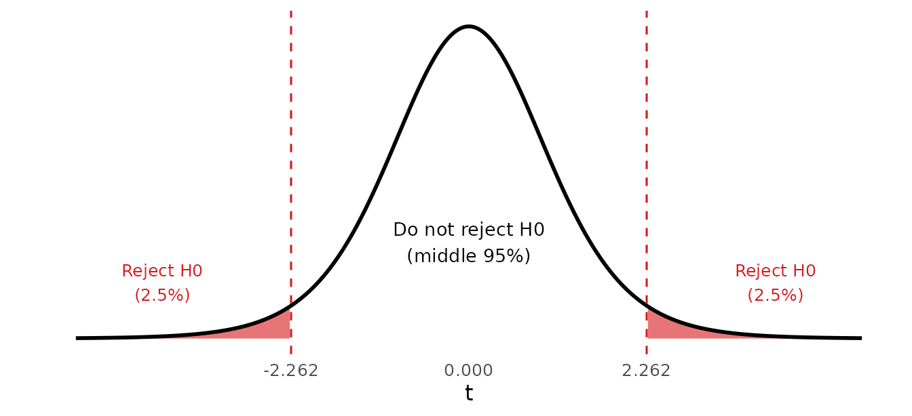
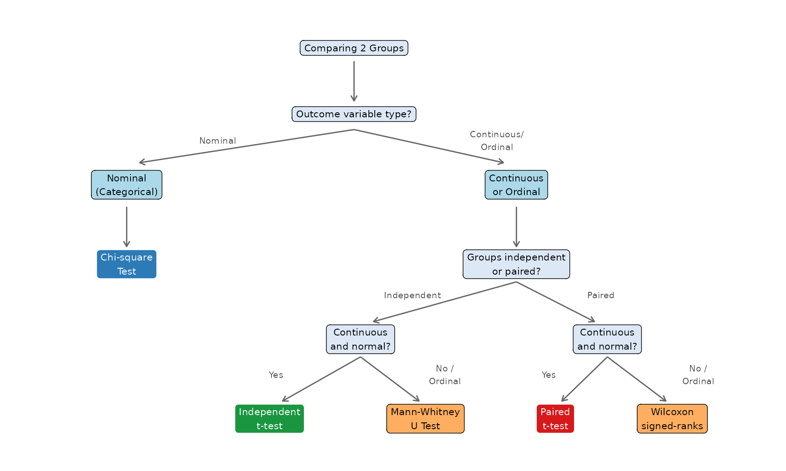

| Test Type | H1 | Use When |
|---|---|---|
| Two-tailed | mu != mu0 (different from) | Either direction (most common) |
| One-tailed (right) | mu > mu0 (greater than) | Only an increase is of interest |
| One-tailed (left) | mu < mu0 (less than) | Only a decrease is of interest |
Chapter 5 | 208141 Introduction to Biostatistics
Why Does This Matter?
In health research, we constantly ask questions that require a decision:
We cannot answer these questions simply by looking at sample means or proportions — random chance alone can create apparent differences between groups. Statistical testing gives us a formal, objective framework for deciding whether an observed difference is likely to be real or simply due to chance.
This is the most widely used tool in health research, and understanding it is essential for reading and interpreting scientific literature.
Statistical testing works by assuming the opposite of what we want to prove, then asking: “If nothing were really happening, how surprising would our data be?”
If the data would be very surprising under the assumption that nothing is happening, we conclude that something probably is happening.
Every hypothesis test involves two competing statements:
The null hypothesis states that there is no effect, no difference, or no relationship in the population. It is the assumption we start with and attempt to disprove.
Examples: - The mean blood pressure is 120 mmHg. (\(H_0: \mu = 120\)) - There is no difference in recovery time between the two groups. (\(H_0: \mu_1 = \mu_2\)) - There is no association between smoking status and disease. (\(H_0:\) no association)
The alternative hypothesis states that there is an effect, difference, or relationship. This is usually what the researcher believes or wants to demonstrate.
Examples: - The mean blood pressure is not 120 mmHg. (\(H_1: \mu \neq 120\)) - Recovery time differs between the two groups. (\(H_1: \mu_1 \neq \mu_2\)) - There is an association between smoking and disease. (\(H_1:\) association exists)
The alternative hypothesis can be directional or non-directional:
| Test Type | H1 | Use When |
|---|---|---|
| Two-tailed | mu != mu0 (different from) | Either direction (most common) |
| One-tailed (right) | mu > mu0 (greater than) | Only an increase is of interest |
| One-tailed (left) | mu < mu0 (less than) | Only a decrease is of interest |
Practical Advice
In most health research, use a two-tailed test unless you have a strong, pre-specified reason to test in only one direction. Two-tailed tests are more conservative and more widely accepted. SPSS reports two-tailed p-values (“Sig. (2-tailed)”), and all tests in this course are two-tailed.
After a significant two-tailed test, we still say which direction the difference goes by looking at the sample means (or mean ranks).
A test statistic is a single number calculated from the sample that measures how far the data are from what \(H_0\) predicts. For the t-tests it has the same form as the Z-score in Chapter 3:
\[\text{test statistic} = \frac{\text{what we observed} - \text{what } H_0 \text{ predicts}}{\text{standard error}}\]
Each test in this chapter has its own test statistic (\(t\), \(\chi^2\), \(U\), \(W\)) and its own formula, but the idea is the same: the further the data are from what \(H_0\) predicts, the more extreme the test statistic.
The p-value is the probability of obtaining results at least as extreme as those observed, assuming the null hypothesis is true.
\[p\text{-value} = P(\text{observed result or more extreme} \mid H_0 \text{ is true})\]
The significance level \(\alpha\) is the threshold we set in advance for deciding whether the p-value is “small enough” to reject \(H_0\).
The most common choice in health research is \(\alpha = 0.05\).
| Decision Rule | |
|---|---|
| If \(p\text{-value} \leq \alpha\) | Reject \(H_0\) — result is statistically significant |
| If \(p\text{-value} > \alpha\) | Fail to reject \(H_0\) — insufficient evidence |
Common Misinterpretations
“Failing to reject \(H_0\)” is NOT the same as proving \(H_0\) is true. It simply means the data do not provide strong enough evidence against it.
“Statistically significant” does NOT necessarily mean clinically important. With a very large sample, even a trivially small difference can become statistically significant. Always consider the practical meaning of results.
There are two equivalent ways to decide whether to reject \(H_0\). They always give the same decision.
1. Critical value approach (calculating by hand). The critical value is the cut-off from a statistical table (Z, t or \(\chi^2\)) that marks the most extreme \(\alpha\) of the distribution. We use the same left-cumulative notation as in Chapter 4. For a two-tailed test at \(\alpha = 0.05\) the cut-off is at \(1 - \alpha/2 = 0.975\), for example \(t_{0.975,\,9} = 2.262\).
(The rank tests later in this chapter also use this rule: we convert their test statistic to a Z-score first.)
2. p-value approach (reading SPSS output). An exact p-value is hard to find by hand, but SPSS calculates it for us (the column Sig.). We compare it with \(\alpha\) as in the table above.

In this book, worked examples use the critical value for the hand calculation and then show the p-value that SPSS would report, so you can see that both lead to the same conclusion. In the lab, you will use the p-value.
When making a decision about \(H_0\), two types of errors are possible:
| Our Decision | H0 is TRUE | H0 is FALSE |
|---|---|---|
| Reject H0 | Type I Error (alpha) - False Positive | Correct Decision (Power = 1 - beta) |
| Fail to reject H0 | Correct Decision | Type II Error (beta) - False Negative |
The 5-Step Framework
Step 1 — State the hypotheses: Write \(H_0\) and \(H_1\) clearly.
Step 2 — Choose the significance level: Usually \(\alpha = 0.05\).
Step 3 — Select and compute the test statistic: Choose the test that matches the data type and study design, and calculate its test statistic.
Step 4 — Compare: By hand, compare the test statistic with the critical value from the table; with SPSS, read the p-value (Sig.).
Step 5 — Make a decision and interpret: Reject or do not reject \(H_0\), then state your conclusion in the context of the problem — including the direction of any difference.
The chi-square test of independence is used when:
Data are arranged in a contingency table (also called a cross-tabulation):
\[\begin{array}{|l|c|c|c|} \hline & \textbf{Outcome: Yes} & \textbf{Outcome: No} & \textbf{Row Total} \\ \hline \textbf{Group 1} & a & b & a+b \\ \textbf{Group 2} & c & d & c+d \\ \hline \textbf{Column Total} & a+c & b+d & n \\ \hline \end{array}\]
\[\chi^2 = \sum \frac{(O - E)^2}{E}\]
Where:
The sum is taken over all cells in the table. The expected frequency is the count we would expect in a cell if \(H_0\) were true (no association), so a large \(\chi^2\) means the observed counts are far from what \(H_0\) predicts.
The test statistic follows a chi-square distribution with \(df = (\text{rows} - 1) \times (\text{columns} - 1)\).
For a \(2 \times 2\) table: \(df = (2-1)(2-1) = 1\).
Because \(\chi^2\) is a sum of squares, it is never negative, and only large values are evidence against \(H_0\). The critical value therefore uses the left cumulative probability \(1 - \alpha\): at \(\alpha = 0.05\) and \(df = 1\), \(\chi^2_{0.95,\,1} = 3.841\).
Condition for Valid Chi-Square Test
All expected frequencies must be \(\geq 5\). If this condition is violated, use Fisher’s exact test instead (available in SPSS).
| Degrees of Freedom (df) | chi2(0.95, df) |
|---|---|
| 1 | 3.841 |
| 2 | 5.991 |
| 3 | 7.815 |
| 4 | 9.488 |
| 5 | 11.070 |
| 6 | 12.592 |
| 7 | 14.067 |
| 8 | 15.507 |
| 9 | 16.919 |
| 10 | 18.307 |
Reading the SPSS Output (Crosstabs)
SPSS prints several rows in the Chi-Square Tests table. In this course:
The other rows (Continuity Correction, Likelihood Ratio, Linear-by-Linear Association) are not used in this course.
A cross-sectional study investigates whether smoking status is associated with hypertension in a sample of 200 adults.
| Hypertension | No Hypertension | Total | |
|---|---|---|---|
| Smoker | 45 | 55 | 100 |
| Non-smoker | 25 | 75 | 100 |
| Total | 70 | 130 | 200 |
Test at \(\alpha = 0.05\) whether smoking is associated with hypertension.
Solution
Step 1 — Hypotheses:
\(H_0\): Smoking status and hypertension are independent (no association).
\(H_1\): Smoking status and hypertension are associated.
Step 2 — \(\alpha = 0.05\)
Step 3 — Expected frequencies and test statistic:
\[E = \frac{\text{Row total} \times \text{Column total}}{n}\]
| Group | O (Hyp.) | E (Hyp.) | O (No Hyp.) | E (No Hyp.) |
|---|---|---|---|---|
| Smoker | 45 | 35 | 55 | 65 |
| Non-smoker | 25 | 35 | 75 | 65 |
All expected frequencies are \(\geq 5\), so the chi-square test is valid.
\[\chi^2 = \frac{(45-35)^2}{35} + \frac{(55-65)^2}{65} + \frac{(25-35)^2}{35} + \frac{(75-65)^2}{65}\]
\[= \frac{100}{35} + \frac{100}{65} + \frac{100}{35} + \frac{100}{65} = 2.857 + 1.538 + 2.857 + 1.538 = \mathbf{8.791}\]
\(df = (2-1)(2-1) = 1\)
Step 4 — Compare:
Critical value from the chi-square table: \(\chi^2_{0.95,\,1} = 3.841\). Since \(8.791 > 3.841\), the test statistic falls in the rejection region.
SPSS (Pearson Chi-Square row) would report \(p = 0.003\), which is \(< 0.05\) — the same decision.
Step 5 — Decision and interpretation:
We reject \(H_0\). There is a statistically significant association between smoking status and hypertension (\(\chi^2 = 8.79\), \(df = 1\), \(p = 0.003\)). Smokers have a higher prevalence of hypertension (45%) than non-smokers (25%).
Because this is a cross-sectional study, the result shows an association, not that smoking causes hypertension.
The two t-tests in this section compare means. Like the confidence intervals in Chapter 4, they rely on the data (or the sample means) being approximately normal.
Before using a t-test, check whether the outcome is approximately normal:
Graphs: a histogram should look roughly bell-shaped, and the points on a normal Q–Q plot should lie close to the straight line.
Tests: SPSS Explore reports the Kolmogorov–Smirnov and Shapiro–Wilk tests (you practise these in the lab). Their hypotheses are
\(H_0\): the data come from a normal distribution
\(H_1\): the data do not come from a normal distribution
so Sig. > 0.05 means no evidence against normality \(\rightarrow\) a t-test is appropriate; Sig. \(\leq\) 0.05 means the data are not normal \(\rightarrow\) consider a rank test (later in this chapter).
What to check depends on the design:
| Test | Check normality of |
|---|---|
| Independent samples t-test | The outcome in each group separately |
| Paired samples t-test | The differences \(d_i\) within pairs |
With large samples (\(n \geq 30\) per group) the Central Limit Theorem (Chapter 4) makes the t-test robust even if the data are somewhat skewed.
The independent samples t-test is used when:
\[H_0: \mu_1 = \mu_2 \quad \text{(no difference in population means)}\] \[H_1: \mu_1 \neq \mu_2 \quad \text{(the population means differ)}\]
\[t = \frac{\bar{x}_1 - \bar{x}_2}{SE_{\bar{x}_1 - \bar{x}_2}}\]
The standard error of the difference depends on whether the two groups have equal or unequal variances.
Equal variances assumed (pooled):
\[SE = s_p\sqrt{\frac{1}{n_1}+\frac{1}{n_2}}, \qquad s_p = \sqrt{\frac{(n_1-1)s_1^2 + (n_2-1)s_2^2}{n_1+n_2-2}}\]
Equal variances not assumed (Welch’s):
\[SE = \sqrt{\frac{s_1^2}{n_1}+\frac{s_2^2}{n_2}}\]
The test statistic follows a t-distribution with \(df = n_1 + n_2 - 2\) (equal variances) or an approximated df (Welch’s, calculated by SPSS).
SPSS decides between the two versions with Levene’s test for equality of variances, printed in the first columns of the Independent Samples Test table:
\(H_0: \sigma_1^2 = \sigma_2^2\) (the two variances are equal)
\(H_1: \sigma_1^2 \neq \sigma_2^2\) (the variances differ)
Reading the Independent Samples Test Table — Two Steps
Step 1 — Levene’s test (Sig. in the Levene columns):
Step 2 — the t-test (Sig. (2-tailed) in the row you chose): compare with \(\alpha\) to decide whether the means differ.
Do not confuse the two Sig. values: the first is about variances, the second is about means.
When you calculate by hand in this course, the question will either give you the Levene’s test result or state whether the variances can be assumed equal. You do not need to decide this yourself from the SDs.
A clinical trial compares the mean reduction in systolic blood pressure (mmHg) between patients receiving a new drug vs. a placebo after 8 weeks.
| Group | n | Mean reduction | SD |
|---|---|---|---|
| New drug | 40 | 12.4 | 6.8 |
| Placebo | 40 | 7.1 | 7.2 |
Assume the two population variances are equal. Test at \(\alpha = 0.05\) whether the mean reduction in SBP differs between the new drug and placebo.
Solution
Step 1 — Hypotheses:
\(H_0: \mu_1 = \mu_2\) (no difference in mean reduction)
\(H_1: \mu_1 \neq \mu_2\) (two-tailed; difference exists)
Step 2 — \(\alpha = 0.05\)
Step 3 — Pooled standard error. The question states that the variances are equal, so we use the pooled (equal variances) formula.
\[\begin{aligned} s_p &= \sqrt{\frac{(40-1)(6.8)^2 + (40-1)(7.2)^2}{40+40-2}} = \sqrt{\frac{39(46.24) + 39(51.84)}{78}} \\ &= \sqrt{\frac{1803.36 + 2021.76}{78}} = \sqrt{49.041} = 7.003 \end{aligned}\]
\[SE = 7.003 \times \sqrt{\frac{1}{40}+\frac{1}{40}} = 7.003 \times \sqrt{0.05} = 7.003 \times 0.2236 = 1.566\]
\[t = \frac{12.4 - 7.1}{1.566} = \frac{5.3}{1.566} = \mathbf{3.384}\]
\(df = 40 + 40 - 2 = 78\)
Step 4 — Compare:
\(df = 78\) is not listed in the t-table, so we use the next smaller df, 70: \(t_{0.975,\,70} = 1.994\) (the exact value for \(df = 78\) is 1.991).
Since \(3.384 > 1.994\), the test statistic falls in the rejection region. SPSS would report \(p = 0.001\), which is \(< 0.05\).
Step 5 — Decision and interpretation:
We reject \(H_0\). The mean reduction in systolic blood pressure differs significantly between the two groups (\(t = 3.38\), \(df = 78\), \(p = 0.001\)). The new drug group had the larger mean reduction: 12.4 vs. 7.1 mmHg, a difference of 5.3 mmHg (95% CI: 2.2 to 8.4 mmHg).
The paired samples t-test is used when:
\[H_0: \mu_d = 0 \quad \text{(mean difference is zero)}\] \[H_1: \mu_d \neq 0 \quad \text{(mean difference is not zero)}\]
Where \(\mu_d\) is the population mean of the within-pair differences.
For each pair \(i\), compute the difference: \(d_i = x_{1i} - x_{2i}\)
Then:
\[t = \frac{\bar{d}}{s_d / \sqrt{n}}\]
Where:
The test statistic follows a t-distribution with \(df = n - 1\).
Why Not Use the Independent t-Test for Paired Data?
Each patient is compared with themselves, so differences between patients (age, weight, baseline health) cancel out. Working with the differences \(d_i\) turns two columns of data into one, and the test becomes a one-sample test of whether the mean difference is 0.
A study measures the diastolic blood pressure (DBP) of 10 patients before and after 4 weeks of a lifestyle intervention.
| Patient | DBP Before (mmHg) | DBP After (mmHg) | Difference d = Before - After |
|---|---|---|---|
| Patient 1 | 92 | 85 | 7 |
| Patient 2 | 88 | 82 | 6 |
| Patient 3 | 95 | 89 | 6 |
| Patient 4 | 100 | 91 | 9 |
| Patient 5 | 85 | 80 | 5 |
| Patient 6 | 97 | 88 | 9 |
| Patient 7 | 90 | 84 | 6 |
| Patient 8 | 94 | 87 | 7 |
| Patient 9 | 88 | 83 | 5 |
| Patient 10 | 96 | 88 | 8 |
Test at \(\alpha = 0.05\) whether the mean DBP changed after the intervention. Assume the differences are approximately normally distributed.
Solution
Step 1 — Hypotheses:
\(H_0: \mu_d = 0\) (no mean change in DBP)
\(H_1: \mu_d \neq 0\) (mean DBP has changed)
Step 2 — \(\alpha = 0.05\)
Step 3 — Compute \(\bar{d}\), \(s_d\) and the test statistic:
\[\bar{d} = \frac{68}{10} = 6.8 \text{ mmHg}\]
\[s_d = \sqrt{\frac{\sum(d_i - \bar{d})^2}{n-1}} = 1.476\]
\[t = \frac{\bar{d}}{s_d/\sqrt{n}} = \frac{6.8}{1.476/\sqrt{10}} = \frac{6.8}{0.467} = 14.571\]
\(df = n - 1 = 9\)
Step 4 — Compare:
\(t_{0.975,\,9} = 2.262\). Since \(14.571 > 2.262\), the test statistic falls in the rejection region. SPSS would report \(p < 0.001\).
Step 5 — Decision and interpretation:
We reject \(H_0\). Mean diastolic blood pressure changed significantly after the intervention (\(t = 14.57\), \(df = 9\), \(p < 0.001\)). Because \(\bar{d}\) = Before − After is positive, DBP decreased, by 6.8 mmHg on average.
The t-tests need numerical data that are approximately normal. When the outcome is ordinal (such as a pain score) or the normality check fails, we use rank tests instead. Rank tests replace each value by its rank (1st, 2nd, 3rd, …) and do not assume any particular distribution — they are called non-parametric tests.
Each t-test has a rank-test partner:
| Design | Numerical, normal | Ordinal, or not normal |
|---|---|---|
| Two independent groups | Independent samples t-test | Mann-Whitney U test |
| Two related (paired) measurements | Paired samples t-test | Wilcoxon signed-ranks test |
Rank Tests Use the Z-Table You Already Know
The rank tests have their own statistics (\(U\) and \(W\)), but we do not need a new table. We convert \(U\) or \(W\) to a Z-score — exactly what SPSS does — and then use the same rule as in Chapter 3 and Chapter 4:
\[\text{reject } H_0 \text{ if } |z| > z_{0.975} = 1.96 \quad (\alpha = 0.05,\ \text{two-tailed})\]
The Mann-Whitney U test (also called the Wilcoxon rank-sum test) is used when:
It is the non-parametric alternative to the independent samples t-test.
\(H_0\): the outcome values in the two groups are equal (the two groups come from the same distribution)
\(H_1\): the outcome values in the two groups are different
Instead of comparing means, the Mann-Whitney test compares the ranks of observations between the two groups.
Steps:
Intuition Behind the Test
If the two groups come from the same distribution, their ranks should be randomly mixed between the groups — neither group should consistently have higher or lower ranks. A significant result means one group consistently has higher ranks (i.e., higher values) than the other.
\[U_1 = n_1 n_2 + \frac{n_1(n_1+1)}{2} - W_1\]
\[U_2 = n_1 n_2 + \frac{n_2(n_2+1)}{2} - W_2\]
\[U = \min(U_1, U_2)\]
Where \(n_1\), \(n_2\) are the sample sizes and \(W_1\), \(W_2\) are the rank sums for groups 1 and 2 respectively. As a check, \(U_1 + U_2 = n_1 n_2\).
A small \(U\) means the two groups hardly overlap — evidence against \(H_0\).
If \(H_0\) is true, \(U\) is centred at \(n_1 n_2 / 2\) (half of the largest possible value). We standardise it like any Z-score — (value − mean) / SD:
\[\mu_U = \frac{n_1 n_2}{2}, \qquad \sigma_U = \sqrt{\frac{n_1 n_2 (n_1 + n_2 + 1)}{12}}, \qquad z = \frac{U - \mu_U}{\sigma_U}\]
Because \(U = \min(U_1, U_2)\) is the smaller value, \(z\) is always zero or negative. SPSS prints the same Z-score in its Test Statistics table.
Why Your Z May Differ Slightly From SPSS
When there are tied values, SPSS adjusts \(\sigma_U\) for the ties, so its Z-score can differ from the hand calculation in the second decimal place. The decision is the same in practice. The Z-approximation is most accurate when each group has about 10 or more observations; SPSS uses the same approximation for its Asymp. Sig. value.
Pain score (0–10, ordinal) was recorded 24 hours after surgery in 12 patients: 6 received the standard analgesic regimen and 6 received a new regimen. The two groups are different patients, so they are independent.
| Regimen | Pain scores |
|---|---|
| Standard | 6, 7, 5, 8, 6, 7 |
| New | 3, 4, 5, 2, 4, 6 |
Test at \(\alpha = 0.05\) whether pain scores differ between the two regimens.
Solution
Hypotheses: \(H_0\): pain scores in the two groups are equal; \(H_1\): pain scores in the two groups are different. \(\alpha = 0.05\).
| Group | Pain score | Rank (combined) |
|---|---|---|
| New | 2 | 1.0 |
| New | 3 | 2.0 |
| New | 4 | 3.5 |
| New | 4 | 3.5 |
| Standard | 5 | 5.5 |
| New | 5 | 5.5 |
| Standard | 6 | 8.0 |
| Standard | 6 | 8.0 |
| New | 6 | 8.0 |
| Standard | 7 | 10.5 |
| Standard | 7 | 10.5 |
| Standard | 8 | 12.0 |
Step 1 — Rank all 12 scores together. Ties share the average rank: the two 4s occupy ranks 3 and 4, so each gets 3.5; the three 6s occupy ranks 7, 8 and 9, so each gets 8.
Step 2 — Sum the ranks in each group:
\[W_{\text{Standard}} = 8 + 10.5 + 5.5 + 12 + 8 + 10.5 = 54.5\] \[W_{\text{New}} = 2 + 3.5 + 5.5 + 1 + 3.5 + 8 = 23.5\]
(Check: the total of ranks 1 to 12 is \(12 \times 13 / 2 = 78 = 54.5 + 23.5\).)
Step 3 — Calculate U with \(n_1 = n_2 = 6\):
\[U_1 = 36 + \frac{6 \times 7}{2} - 54.5 = 36 + 21 - 54.5 = 2.5\] \[U_2 = 36 + 21 - 23.5 = 33.5\] \[U = \min(2.5,\; 33.5) = 2.5\]
Step 4 — Convert U to a Z-score with \(n_1 = n_2 = 6\):
\[\mu_U = \frac{6 \times 6}{2} = 18, \qquad \sigma_U = \sqrt{\frac{6 \times 6 \times 13}{12}} = \sqrt{39} = 6.245\]
\[z = \frac{2.5 - 18}{6.245} = -2.48\]
Since \(|z| = 2.48 > 1.96\), the result is significant. From the Z-table, \(p = 2 \times (1 - 0.9934) = 0.013\).
SPSS reports \(Z = -2.513\) and \(p\) (Asymp. Sig. 2-tailed) \(= 0.012\) — the same decision (the small difference is the tie adjustment).
Step 5 — Decision. We reject \(H_0\). Pain scores differ significantly between the two regimens. The mean rank of the new regimen (\(23.5 / 6 = 3.9\)) is lower than that of the standard regimen (\(54.5 / 6 = 9.1\)), so patients on the new regimen reported less pain.
The Wilcoxon signed-ranks test (also called the Wilcoxon matched-pairs test) is the non-parametric alternative to the paired samples t-test. It is used when:
Mann-Whitney or Wilcoxon?
Both tests work with ranks, so they are easy to confuse. The difference is the study design, exactly as with the two t-tests:
\(H_0\): the two related measurements are equal
\(H_1\): the two related measurements are different
The Wilcoxon test looks at the differences within each pair, and then ranks the sizes of those differences.
Steps:
\[W = \min(W^{+},\; W^{-})\]
If the two conditions really are the same, the positive and negative ranks should roughly balance, so \(W^{+}\) and \(W^{-}\) should be similar. A small value of \(W\) means the differences fall mostly in one direction, which is evidence against \(H_0\).
\(n\) is the number of pairs after discarding zero differences. If \(H_0\) is true, \(W\) is centred at half of the total of all ranks:
\[\mu_W = \frac{n(n+1)}{4}, \qquad \sigma_W = \sqrt{\frac{n(n+1)(2n+1)}{24}}, \qquad z = \frac{W - \mu_W}{\sigma_W}\]
As with Mann-Whitney: reject \(H_0\) if \(|z| > 1.96\), and SPSS reports this Z-score (adjusted for ties) in its Test Statistics table.
Reading the SPSS Output
Choose Analyze \(\rightarrow\) Nonparametric Tests \(\rightarrow\) Legacy Dialogs \(\rightarrow\) 2 Related Samples, and tick Wilcoxon (older SPSS versions, as in the lab manual, have no Legacy Dialogs step). The Ranks table shows the sum of the negative and positive ranks, and the Test Statistics table reports \(Z\) and the 2-tailed significance. As always, decide by comparing the p-value with \(\alpha\) — the sign of \(Z\) only indicates the direction of the ranks, not the importance of the result.
Blood clotting time (minutes) was measured for 8 patients using two solutions: an extract from shrimp shells (“Shrimp”) and the standard solution (“Standard”). Blood was taken from each patient and divided into two parts, so the two measurements are paired.
| Patient | 1 | 2 | 3 | 4 | 5 | 6 | 7 | 8 |
|---|---|---|---|---|---|---|---|---|
| Shrimp | 3 | 5 | 5 | 4 | 3 | 7 | 8 | 7 |
| Standard | 7 | 6 | 3 | 8 | 5 | 9 | 7 | 9 |
The sample is small (\(n = 8\)), so we cannot rely on the normality of the differences. Test at \(\alpha = 0.05\) whether the clotting times differ, using the Wilcoxon signed-ranks test.
Solution
Hypotheses: \(H_0\): the clotting times with the two solutions are equal; \(H_1\): they are different. \(\alpha = 0.05\).
| Patient | Shrimp | Standard | d | abs(d) | Rank of abs(d) | Signed rank |
|---|---|---|---|---|---|---|
| 1 | 3 | 7 | -4 | 4 | 7.5 | -7.5 |
| 2 | 5 | 6 | -1 | 1 | 1.5 | -1.5 |
| 3 | 5 | 3 | 2 | 2 | 4.5 | 4.5 |
| 4 | 4 | 8 | -4 | 4 | 7.5 | -7.5 |
| 5 | 3 | 5 | -2 | 2 | 4.5 | -4.5 |
| 6 | 7 | 9 | -2 | 2 | 4.5 | -4.5 |
| 7 | 8 | 7 | 1 | 1 | 1.5 | 1.5 |
| 8 | 7 | 9 | -2 | 2 | 4.5 | -4.5 |
Step 1 — Differences \(d = \text{Shrimp} - \text{Standard}\): none is zero, so all 8 pairs are kept.
Step 2 — Rank \(|d|\) with average ranks for ties: the two 1s share ranks 1–2 (each 1.5); the four 2s share ranks 3–6 (each 4.5); the two 4s share ranks 7–8 (each 7.5).
Step 3 — Sum the signed ranks:
\[W^{+} = 4.5 \;(\text{patient } 3) + 1.5 \;(\text{patient } 7) = 6\] \[W^{-} = 7.5 + 1.5 + 7.5 + 4.5 + 4.5 + 4.5 = 30 \quad (\text{patients } 1, 2, 4, 5, 6, 8)\]
(Check: \(W^{+} + W^{-} = 8 \times 9 / 2 = 36\).)
\[W = \min(6,\; 30) = 6\]
Step 4 — Convert W to a Z-score with \(n = 8\) pairs:
\[\mu_W = \frac{8 \times 9}{4} = 18, \qquad \sigma_W = \sqrt{\frac{8 \times 9 \times 17}{24}} = \sqrt{51} = 7.141\]
\[z = \frac{6 - 18}{7.141} = -1.68\]
Since \(|z| = 1.68 \leq 1.96\), the result is not significant. From the Z-table, \(p = 2 \times (1 - 0.9535) = 0.093\).
SPSS reports \(Z = -1.706\) and \(p = 0.088\) — the same decision. (SPSS calculates the difference as Standard − Shrimp, so its Ranks table lists the 6 and the 30 the other way round; \(W\) and the p-value are the same.)
Step 5 — Decision. We do not reject \(H_0\). There is not enough evidence to say that the clotting times produced by the two solutions differ, at the 0.05 level of significance.
| Outcome Data Type | Study Design | Statistical Test | SPSS Procedure |
|---|---|---|---|
| Categorical (Nominal) | 2 independent groups | Chi-square test | Analyze -> Descriptive Statistics -> Crosstabs |
| Continuous (normal) | 2 independent groups | Independent samples t-test | Analyze -> Compare Means -> Independent-Samples T Test |
| Continuous (normal) | 2 related (paired) groups | Paired samples t-test | Analyze -> Compare Means -> Paired-Samples T Test |
| Ordinal or non-normal continuous | 2 independent groups | Mann-Whitney U test | Analyze -> Nonparametric Tests -> Legacy Dialogs -> 2 Independent Samples |
| Ordinal or non-normal continuous | 2 related (paired) groups | Wilcoxon signed-ranks test | Analyze -> Nonparametric Tests -> Legacy Dialogs -> 2 Related Samples |

Ordinal Outcomes Always Go to a Rank Test
An ordinal outcome — such as a pain score, a satisfaction rating or a stage of disease — is never analysed with a t-test, even if it is written as numbers. Use the Mann-Whitney U test (independent groups) or the Wilcoxon signed-ranks test (paired).
Chapter 5 Summary
Hypothesis testing uses sample data to decide between two competing claims: the null hypothesis (\(H_0\)) and the alternative hypothesis (\(H_1\)).
The test statistic measures how far the data are from \(H_0\). By hand we compare it with a critical value; in SPSS we compare the p-value with \(\alpha\). Both give the same decision.
The p-value is the probability of the observed data (or more extreme) if \(H_0\) is true. A p-value \(\leq \alpha\) (usually 0.05) leads us to reject \(H_0\).
Type I error (α): rejecting a true \(H_0\) (false positive). Type II error (β): failing to reject a false \(H_0\) (false negative).
Chi-square test: for association between two categorical (nominal) variables in independent groups. Read the Pearson row, or Fisher’s exact test if any expected count is below 5.
Independent samples t-test: for comparing means of two independent groups with continuous, approximately normal data. Read Levene’s test first to choose the row.
Paired samples t-test: for comparing means of two related measurements (before/after, or matched pairs) when the differences are approximately normal.
Mann-Whitney U test: for comparing two independent groups when the outcome is ordinal or the normality assumption is not met.
Wilcoxon signed-ranks test: for comparing two related measurements when the outcome is ordinal or the differences are not normally distributed. It is the non-parametric alternative to the paired t-test. For both rank tests, convert \(U\) or \(W\) to a Z-score and reject \(H_0\) if \(|z| > 1.96\) — the same Z-score that SPSS reports.
Always choose the test based on data type and study design — using the wrong test leads to invalid conclusions.
| Quantity | Formula | Notes |
|---|---|---|
| Decision with SPSS | Reject \(H_0\) if \(p \leq \alpha\) | Usually \(\alpha = 0.05\) |
| Expected frequency | \(E = \dfrac{\text{Row total} \times \text{Column total}}{n}\) | All \(E \geq 5\), otherwise Fisher’s exact test |
| Chi-square | \(\chi^2 = \sum \dfrac{(O - E)^2}{E}\) | \(df = (r-1)(c-1)\); reject if \(\chi^2 > \chi^2_{0.95,\,df}\) |
| Pooled SD | \(s_p = \sqrt{\dfrac{(n_1-1)s_1^2 + (n_2-1)s_2^2}{n_1 + n_2 - 2}}\) | Equal variances (Levene Sig. \(> 0.05\)) |
| Independent t | \(t = \dfrac{\bar{x}_1 - \bar{x}_2}{s_p \sqrt{\frac{1}{n_1} + \frac{1}{n_2}}}\) | \(df = n_1 + n_2 - 2\) |
| Welch SE | \(SE = \sqrt{\dfrac{s_1^2}{n_1} + \dfrac{s_2^2}{n_2}}\) | Unequal variances; df from SPSS |
| Paired t | \(t = \dfrac{\bar{d}}{s_d / \sqrt{n}}\) | \(d_i = x_{1i} - x_{2i}\); \(df = n - 1\) |
| Decision for t | Reject \(H_0\) if \(|t| > t_{0.975,\,df}\) | Two-tailed, \(\alpha = 0.05\) |
| Mann-Whitney U | \(U_1 = n_1 n_2 + \dfrac{n_1(n_1+1)}{2} - W_1\), \(U = \min(U_1, U_2)\) | \(W_1\) = rank sum of group 1 |
| U to Z | \(z = \dfrac{U - n_1 n_2 / 2}{\sqrt{n_1 n_2 (n_1 + n_2 + 1)/12}}\) | |
| Wilcoxon W | \(W = \min(W^{+}, W^{-})\) | Drop zero differences first |
| W to Z | \(z = \dfrac{W - n(n+1)/4}{\sqrt{n(n+1)(2n+1)/24}}\) | \(n\) = number of non-zero pairs |
| Decision for U and W | Reject \(H_0\) if \(|z| > 1.96\) | Same Z as SPSS (up to ties) |
Exercise 1 — Chi-Square Test
A researcher investigates whether physical activity level is associated with diabetes status in 300 adults:
| Diabetes | No Diabetes | Total | |
|---|---|---|---|
| Active | 18 | 132 | 150 |
| Inactive | 42 | 108 | 150 |
| Total | 60 | 240 | 300 |
(a) State \(H_0\) and \(H_1\).
(b) Calculate all expected frequencies and verify the chi-square condition is met.
(c) Calculate the chi-square test statistic.
(d) At \(\alpha = 0.05\), what is your conclusion?
(e) In plain language, what does your result mean?
Exercise 2 — Independent Samples t-Test
A study compares the mean hemoglobin levels (g/dL) between male and female patients:
| Group | n | \(\bar{x}\) | s |
|---|---|---|---|
| Male | 35 | 14.8 | 1.6 |
| Female | 35 | 12.9 | 1.4 |
In SPSS, Levene’s test for these data gives Sig. = 0.41.
(a) State \(H_0\) and \(H_1\) (two-tailed).
(b) Based on Levene’s test, should you use the “Equal variances assumed” or the “Equal variances not assumed” version? Why?
(c) Calculate the pooled standard error.
(d) Calculate the t test statistic.
(e) At \(\alpha = 0.05\) with appropriate df, state your conclusion.
Exercise 3 — Paired Samples t-Test
A diabetes clinic measures the capillary blood glucose (mg/dL) of 8 patients with type 2 diabetes before and 2 hours after a structured 30-minute walking session:
| Patient | 1 | 2 | 3 | 4 | 5 | 6 | 7 | 8 |
|---|---|---|---|---|---|---|---|---|
| Before | 182 | 165 | 210 | 148 | 195 | 172 | 160 | 188 |
| After | 160 | 150 | 182 | 141 | 170 | 158 | 152 | 165 |
Assume the differences are approximately normally distributed.
(a) Calculate the difference \(d_i\) = Before − After for each patient.
(b) Calculate \(\bar{d}\) and \(s_d\).
(c) Calculate the paired t statistic.
(d) At \(\alpha = 0.05\), did blood glucose change significantly after the walking session? In which direction? State your conclusion clearly.
(e) Which variable would you check for normality in SPSS before using this test, and which SPSS procedure would you use?
Exercise 4 — Mann-Whitney U Test
A physiotherapy team records the time to first walk after knee surgery (hours), which is strongly right-skewed, for two independent groups of patients:
| Group | Time to first walk (hours) |
|---|---|
| Early mobilisation programme | 12, 18, 9, 30, 15 |
| Usual care | 22, 35, 28, 40, 26, 48 |
(a) Explain why the Mann-Whitney U test is used rather than the independent samples t-test.
(b) Rank all 11 values together and find the rank sums \(W_1\) and \(W_2\).
(c) Calculate \(U_1\), \(U_2\) and \(U\).
(d) Convert \(U\) to a Z-score and state your conclusion at \(\alpha = 0.05\). Use the Z-table to find the approximate p-value.
Exercise 5 — Wilcoxon Signed-Ranks Test
An anxiety score (0–20, ordinal) was recorded for 9 patients before and after a pre-operative education session:
| Patient | 1 | 2 | 3 | 4 | 5 | 6 | 7 | 8 | 9 |
|---|---|---|---|---|---|---|---|---|---|
| Before | 14 | 11 | 16 | 9 | 13 | 15 | 12 | 10 | 17 |
| After | 9 | 10 | 11 | 8 | 6 | 12 | 4 | 13 | 7 |
(a) Calculate \(d\) = Before − After for each patient.
(b) Rank \(|d|\) (use average ranks for ties) and find \(W^{+}\), \(W^{-}\) and \(W\).
(c) Convert \(W\) to a Z-score and state your conclusion at \(\alpha = 0.05\). Did anxiety go up or down?
Exercise 6 — Choosing the Right Test
For each scenario below, state which statistical test is most appropriate and briefly explain why:
(a) Comparing the proportion of post-operative complications between patients who received standard care vs. enhanced recovery protocol.
(b) Comparing patient satisfaction scores (rated: Poor / Fair / Good / Excellent) between two hospital wards.
(c) Measuring the effect of a new diet on body weight by recording each participant’s weight before and after a 12-week program (the differences are approximately normal).
(d) Comparing the mean length of hospital stay (days) between two age groups (under 60 vs. 60 and over), where length-of-stay data is strongly right-skewed.
(e) Comparing pain scores (0–10, ordinal) recorded for the same patients before and 24 hours after starting a new analgesic.
End of Chapter 5
Coming Up Next
Chapter 6: Introduction to Statistical Modeling — We take our first steps beyond comparing two groups, exploring how one variable can be used to explain or predict another through linear regression.